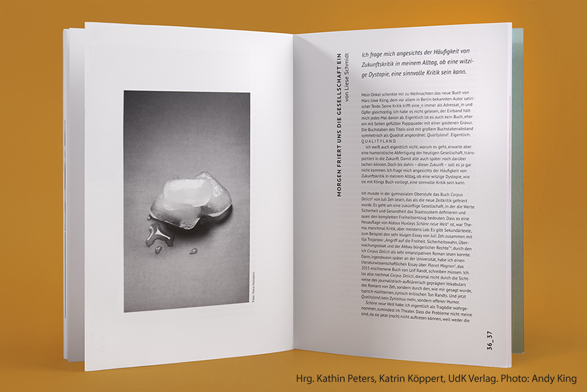

Hallo, mein Name ist Catharina Dörr. Ich bin Gestalterin und Autorin, lebe und arbeite in Berlin und Potsdam. Ich schreibe Texte über Gender, Objekte, Kunst und Design und arbeite als Grafik-Designerin in einem kleinen Unternehmen für Klimafolgenforschung. Auch als Selbstständige mache ich Logos, Infografiken, Plakate, alles rund um Vinyl, gestalte Karten und zeichne für Tattoos. Frei experimentiere ich mit Schrift und schreibe meine Texte. Ich schreibe über Dinge die uns umgeben, was sie mit uns machen, wie sie uns formen und bestimmen, wie es ist und wie es besser ginge. Mich beschäftigt was Menschen in Bewegung hält, was sie hindert und was die Gestaltung unserer Welt damit zu tun hat. Unsere Handlungs- und Verwandlungsfähigkeiten zu ergreifen treibt mich an. Gestaltung ist für mich ein Mittel, mein Ausdruck, diesen Raum zu ermöglichen – durch beobachten, reflektieren, verwandeln, handeln.
Ich studierte an der Universität der Künste Berlin (UdK) Visuelle Kommunikation und Produkt- und Prozessgestaltung im Master. Meine beiden Studiengänge schloss ich mit den Forschungsarbeiten ›Utopie – Gegenwartskritik durch Gestaltung‹ und ›Das Geschlecht der Objekte‹ ab. Dazwischen arbeitete ich einige Zeit als studentische Hilfskraft im Institut für Theorie und Geschichte der Gestaltung der UdK. Durch meine vorherige Ausbildung zur staatlich geprüften Grafik-Designerin, an der Carl-Hofer-Schule in Karlsruhe, arbeitete ich immer wieder im Bereich des Grafik-Designs, während ich mich im Studium dem Spekulativen Design, Critical Design, der Design- und Gendertheorie und der experimentellen Typografie widmete. Auch gebe ich neuerdings Vorträge zu meiner Grundlagenforschung zu Gender und Objekten sowie Workshops zur Deutung und Umdeutung uns umgebener Artefakte.
Ich bin immer auf der Suche nach Austausch und nach Möglichkeiten das Netzwerk zu erweitern und zu stärken. Wenn Du also mehr über mich erfahren möchtest, Du von deinen Projekten erzählen willst, mit mir arbeiten möchtest oder einfach nur so, freue ich mich sehr über Deine Nachricht, egal aus welchem Bereich Du kommst!
EN/ Hello, my name is Catharina Dörr. I am a designer and writer, living and working in Berlin and Potsdam. I write texts about gender, objects, art and design and work as a graphic designer in a small company for climate impact research. Also as a freelancer I make logos, infographics, posters, everything about vinyl, design cards and draw for tattoos. Freely I experiment with type and write my texts. I write about things that surround us, what they do to us, how they shape and define us, how it is and how it could be better. I am concerned with what keeps people moving, what holds them back, and what the shaping of our world has to do with it. Using our abilities to act and transform drives me forward. Design is a medium, my expression, to make this space possible - through observing, reflecting, transforming, acting.

I studied Visual Communication in the Bachelor and Product Design for my Master's degree at the Berlin University of the Arts (UdK). I completed both with my research papers 'Utopia through Design' and 'The Gender of Objects' and supplemented them with designing Posters and Products. In between I worked for some time as a student assistant at the Institute for Theory and History of Design at UdK. Through my apprenticeship before studying as a state-certified graphic designer, at the Carl-Hofer-Schule in Karlsruhe, I worked now and then in the field of graphic design, while concentrating my studies on speculative design, critical design, design and gender theory, and experimental typography. I have also recently been giving lectures on my basic research on gender and objects, as well as workshops on interpreting and reconstructing artifacts that surround us.
I am always looking for exchanges and opportunities to expand and strengthen the network. So if you want to learn more about me, you want to tell me about your projects, you want to work with me or any other reason, I am very happy to hear from you, no matter what field you come from!
November 2021 – Publikation eines Essays aus der Forschungsarbeit ›Das Geschlecht der Objekte‹
›Die Schraubenmutter‹ im form-Magazin Nummer 294
November 2021 – Workshop zu Critical Crafts an der UdK Berlin
am Fachbereich Mode des Gewebekurses unter der Leitung von Evelyn Sitter
Oktober 2021 – Vortrag zu ›Das Geschlecht der Objekte‹
im Rahmen der Konferenz zu Gendergerechtigkeit und Diversität im Design
der Schader-Stiftung und dem Institut für Designforschung der Hochschule Darmstadt
Mai 2021 – Publikation eines Essays aus der Forschungsarbeit ›Das Geschlecht der Objekte‹
›Der Staubsauger‹ im Magazin der UdK Berlin 17.6.118